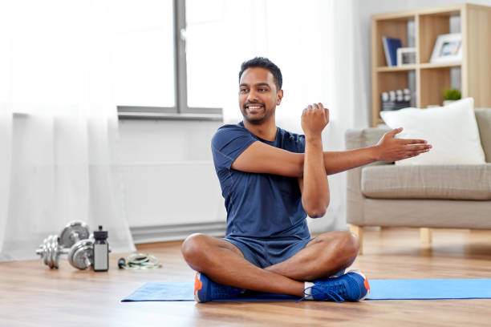

Autor: Štěpán Prokop | Datum: 24. března 2025
Začít cvičit doma může být skvělý způsob, jak se dostat do formy, aniž byste museli chodit do posilovny. Zde je několik tipů, jak začít:
Chcete zhubnout, nabrat svaly, nebo si jen zlepšit kondici? Každý cíl vyžaduje jiný přístup k tréninku.
Rozvrhněte si tréninky tak, aby odpovídaly vašim časovým možnostem. Doporučujeme alespoň 3-4x týdně.
Dřepy, kliky a výpady jsou skvělé cviky, které nevyžadují žádné vybavení.
Začněte s lehčími cviky a postupně přidávejte opakování nebo zkuste náročnější varianty.